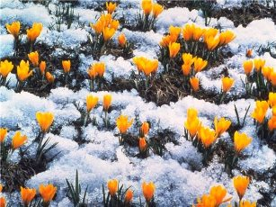
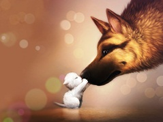
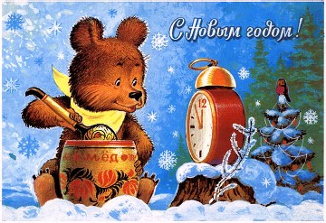
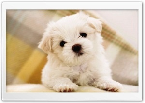

Смоляков
Алексей Алексеевич

Как рождается весна?
Как рождается весна? Это что за чудо?
А зимой где ты была? И пришла откуда?
Этот тёплый ветерок, что меня ласкает
О весне наверняка все ответы знает.
Солнце в небе голубом ласковым вдруг стало,
Убежало вмиг с водой снега одеяло.
И зелёная трава уже пробивается,
Вот такие чудеса! Детям они нравятся!
02.03.2013г
Ручейки бегут смеясь
Ручейки бегут смеясь,
Собираясь в лужи.
Очень радуя ребят
После зимней стужи.
Веселится детвора
И от солнца жмурится.
Наконец весна пришла.
Все спешат на улицу.
Запускают в ручейки
Кораблик с парусами,
Тот, что в зимние деньки
Мастерили сами.
По волнам корабль бежит,
Солнце отражает.
Снова к нам весна спешит,
Каждый это знает.
Петь охота
Средь заснеженных полей,
В глубине дубравы,
Вдруг распелся воробей.
Видно ищет славы.
Выбор песен не велик,
И мотив «чирик-чирик».
Оценить его вокал,
Зрителей вокруг собрал.
Белочка на ёлку села
И тихонечко запела.
Заяц на пенёк забрался,
Видно танцевать собрался.
Смотрит ворон строгим оком,
Вдруг закаркал ненароком.
Воробьишка не велик,
А зверушек веселит.
Ждёт зверьё весны прихода,
Потому и петь охота.
06.02.2013г
Скоро к нам придёт весна
Ветер тучи разорвал, снова светит солнце
И ко мне оно уже прыгнуло в оконце.
Засверкало всё вокруг в переливах света.
Это значит, что весна уже близко где-то.
Оседает, тает снег, ручейки рождая,
Скоро к нам придёт весна, точно это знаю.
Будет всех теплом ласкать, расплескает лужи.
Как же нам её не ждать после зимней стужи.
07.02.2013г
Лыжня
Мне мороз кусает нос
И румянит щёки.
- Не кусай меня мороз,
Я выучил уроки.-
И лечу теперь стрелой,
Я на лыжах к лесу,
Оставляя за спиной
Снега занавесу.
Протянул я вдоль опушки
Лыжные тропинки,
В них ложатся сразу спать
Новые снежинки.
Выбрал место, отдохнул я
Под мохнатой елью,
Под ней тёплая хвоя
Устлана постелью.
И назад я побегу
Этою тропою,
Всем лыжню уберегу,
Что и снег не скроет!
21.12.2012г
Собачья честь
Ах, обжора беззастенчивый!
Ах, лохматый, наглый пёс!
Обобрал котёнка малого,
Что кусочек сыра нёс.
Он тащил его, старался,
Чтоб с сестрёнкой своей съесть.
На пути к тебе попался.
Совесть у тебя хоть есть?
Был когда-то пёс военный,
Пограничником служил!
С биографией отменной.
До чего ж теперь дожил?
Вспомни сколько диверсантов
В своё время задержал!
Много надо ли талантов?
На ребёночка напал.
Где ж твоя собачья честь?
Её нету? Или есть?
Посидел, подумал пёс…
И котятам сыр отнёс.
11.01.2013г
Новый год в берлоге!

Притащил медведь к берлоге,
В Новый Год, большую ель.
Медвежата на подмоге,
Наряжать её скорей.
Поразвесили гирлянды
Ледяного хрусталя.
Из цветов связали банты,
Летом запасли не зря.
А из шишек медвежата
Сделали фигурки.
Здесь и рыжая лиса,
И зайчишка юркий.
Из колючих камышей
Сделали семью ежей.
Из дубовой из коры
Получаются шары.
А из гибкой ивы
Пароход красивый.
Птицы пёрышки свои
Тоже не жалели,
Развеваются они
На вершине ели.
А на самой вышине
И лучист и ярок,
Горит в солнечном огне
От меня подарок.
Встретят мишки Новый Год
У мохнатой ели.
А затем с её ветвей
Сделают постели.
Будут спать они зимой
До весны грядущей.
А грядущий Новый год
Будет ещё лучше.
24.12.2012г
Оля
Нету в нашей школе
Красивей чем Оля.
И об этом все подряд
В нашем классе говорят.
Оля красивей цветка,
Она солнца лучик.
Кто похвалит лучше всех-
Тот списать получит.
08.01.13г
Несмышлёныш
Что ты, воробей вприпрыжку
По дорожкам прыг да прыг?
Как взъерошенный мальчишка
Вовсе смирно не сидишь.
То снуёшь тут под ногами,
То на дерево взлетел.
Не взрослеешь ты с годами,
И совсем не поумнел.
Глянь, вороны на заборе
Сели ровно в ряд.
Аккуратные, как в школе.
Чинно говорят.
Только несмышлёныша
Не кому учить.
Ты за хлеба крошечки
Будешь нас смешить.
06.01.2013год
Опасный пёс
У
меня четыре лапы,
У меня пушистый хвост.
У меня есть зубы; цапать.
Значит я опасный пёс?
Но меня подходят, гладят.
Кто потреплет за ушком,
На колени кто посадит.
Называют все Снежком.
Да. Я белый и пушистый,
Только мокрый, чёрный нос.
Пусть хоть кот меня боится,
Я же настоящий пёс!
06.01.2013г
Важный петушок
Ходит важный петушок,
А на лапах шпоры.
Вверху алый гребешок.
Ведут куры споры:
-Петя наш здесь командир,
Он главней хозяев!
В драке он непобедим,
Мы про это знаем.
-Нет, он, видно, генерал.
На плечах погоны,
А зерно когда клевал,
Клюв какой огромный!
Пёс Барбос недалеко
Сплетни эти слушал.
Взял он Петю за крыло
И отправил в лужу.
Чтобы знали куры впредь
Кого надо слушать.
Пёс курятник сторожит,
На хозяев служит.
07.01.2013г
Зимняя заря
В небе загорается зимняя заря,
Будто появляется грудка снегиря.
И всё шире, шире и румяней цвет,
Вот и солнца лучик, в инее рассвет.
Через поле лучик к дому побежал,
На моей подушке тихо полежал.
И вдруг брызнул разом
В миллион лучей.
Темноту размазал
И прогнал взашей.
Стало очень ярко и светло вокруг.
Здравствуй, здравствуй солнышко-
Наш волшебный друг.
30.12.2012г
На санках
В этот солнечный денёк весь снежок искрится.
Значит самая пора нам повеселиться.
Одевайтесь потеплее , смелые ребята.
И на горку поскорей, кто с сестрой, кто с братом.
Даже дедушка пришёл с внучкою кататься.
Ему очень хочется на санях промчаться.
Его внучка с высоты летит словно птица.
Дед бы тоже прокатился, только он боится.
21.12.2012г
Бродячий пёс
Бродячий пёс в пыли бредёт,
Опущен хвост,- ту пыль метёт.
Глаза печальные глядят,
Прожита жизнь, потухший взгляд.
Куда бредёт? Зачем бредёт?
Его никто нигде не ждёт.
А служить готов бы ради: -
Лишь бы кто его погладил.
Для его душевных ран
Нужен доброты бальзам.
Доброты той дефицит.
И у пса печальный вид.
18.12.2012г
Наша Таня
Наша Таня встанет рано,
И постельку уберёт.
У неё сегодня праздник,
Нынче Тане ровно год.
Но не встала Таня рано,
И постель не убрала.
Годик- это слишком мало,
Наша Танечка мала.
Мы все Таню поздравляем,
Приглашаем к пирогу.
А она головкой крутит,
Говорит: - Агу, агу-.
20.12.2012г
Радуга
Коромыслом радуга повисла
Над голубой, извилистой рекой.
Протянулось это коромысло
Через луг зелёный, заливной…
Коромыслом радуга повисла
Над голубой, извилистой рекой,
Словно зачерпнуть в реке водицы
Думала красавица- девица,
И забыла коромысло над водой.
Дружок
Ветер дует злой, холодный.
Начинается метель,
А щеночек беспородный
Лапкой мне скребётся в дверь.
Как же ты один бедняга
Будешь зиму зимовать?
Мне нельзя тебя оставить,
Надо в дом сиротку взять.
Я собачку отогрела.
Стала шерстку отмывать.
Мой щенок стал чистый, белый,
Начал весело играть.
Назову его Дружком,
Будет охранять мой дом.
14.12.2012г
В детском саду- Новый Год!
Скоро, скоро Новый Год
В детском саду нашем!
Здесь мы ёлку нарядим
И споём и спляшем!
И Снегурочка здесь будет,
К нам придёт и Дед Мороз!
Он подарки не забудет,
У него их целый воз!
Всем детишкам он подарит
Разные подарки.
С Новым Годом всех поздравит,
Праздник будет яркий!
Будет ёлочка гореть,
Радовать детишек.
Ну а мы – плясать и петь.
Дед Мороз, чтоб слышал!
Рукодельница
Оля вымыла полы, вымыла посуду.
- На сегодня хватит дел, отдыхать я буду!-
Постираю вот сейчас с кружевом платочки,
А потом только полью мамины цветочки.
А затем зашью дыру на рубашке брата.
А ещё моих котят покормить мне надо.
Схожу быстро в магазин, нужно купить хлебушка.
А теперь сварю борща, его любит дедушка.
Помогает Оля всем, некогда лениться.
Называет её мама – моя рукодельница.
06.12.2012г
Веснушки у подружки
У моей подружки
Рыжие веснушки.
На щеках и на носу,
Ей веснушечки к лицу.
Я всегда ей говорю,
Что такой её люблю.
Не слушает подружка,
Хочет смыть веснушки.
Долго тёрла мылом.
Ничего не смыла.
03.12.2012г.
Утята
По тропинке идут в ряд
Десять маленьких утят.
С ними мама- утка.
Научить плавать ребят,
Это вам не шутка.
Утка тихо поплыла
По озёрной глади.
А за ней десять утят
Проплывают сзади.
Утка крякает довольно,
Важно крутит шею.
Оказалось что утята
Плавать все умеют.
03.12.2012г
Саша и каша
Очень любит Саша
С утра кушать кашу.
Мама не забыла,
Каши наварила.
Сверху маслом прилила,
И сыночку принесла.
Ароматно пахнет каша,
Улыбается и Саша.
Под столом Василий- кот,
Притаился, завтрак ждёт.
Не прошло и двух минут,
Нету каши больше тут.
Съел Василий кашу,
Хвалит мама Сашу.
04.12.2012г
Любовь
Платьице в горошек,
Румянец на щеке.
Провожал Алёшка
Машеньку к реке.
Усадил на травку,
Ромашку подарил.
Очень мальчик Лёша
Машеньку любил.
04.12.2012г
Весёлые зверушки
Постелил снежок постели,
Мягкие и белые.
Собрались у большой ели
Все зверушки смелые.
Птички кружатся в припрыжку,
Лиса- хвостиком метёт.
Мишка собирает шишки,
Зайка ушками прядёт.
Лось стучит копытами
И рогами крутит.
С кабанами сытыми
Танцевать он будет.
Старый ёж пришёл сюда,
Удивлён веселью.
Молодым и он всегда
Танцевал под елью.
Серый волк идёт с волчицей
И ведёт волчат.
Все желают веселиться,
Дружить все хотят.
Закружился вокруг ели
Этот хоровод.
Собрались лесные звери
Встретить Новый год.
05.12.2012г
Тима в зоопарке
Тимофей однажды в книжке
Морду увидал мартышки.
-Любопытно. Это что же,
На меня она похожа?-
В зоопарк поехал Тима
На троллейбусе, с отцом.
Обезьян увидеть зримо,
Со своим сравнить лицом.
Корчил рожи он у клетки,
Палец у виска крутил.
Говорил: - Вы мои предки,
Дед мой с вами в джунглях жил.-
Обезьяны ухмыльнулись:
- Что за странный мальчуган?-
И от Тимы отвернулись:
- Видно мальчик – хулиган.-
Удивился очень Тима,
Ошарашен Тимофей..
Оказались обезьяны
Тимофея поумней.
22.11.2012г
Снегири
Я в восторге, посмотри,
Прилетели снегири.
На берёзке сели в ряд,
Грудки алые горят.
Словно солнышко взошло,
Так красиво и светло.
Я взволнован и ликую,
Пташек этих нарисую.
Покажу своим друзьям.
Снегирей я видел сам!
20.11.2012г
Будут все здоровы!
На закате у реки
Тишина, прохлада.
Пахнут мёдом васильки
И пасётся стадо.
Жуют травку не спеша
Тучные коровы.
Молочка дать малышам.
Будут все здоровы!
20.11.2012г
Синички
Как весёлые сестрички
Тут и там снуют синички.
Фартучки одели
На кормушку сели.
Ведь синичкам нужен
Аппетитный ужин.
Положу в кормушку
Вкусных зёрен кружку.
Если будет мало
Дам кусочек сала.
Всем давно известно,
Как оно полезно.
И в в любые холода
Будет им тепло тогда...
А на сытный завтрак
Прилетайте завтра.
19.11.2012г
Всё вокруг белым-бело
Всё вокруг белым-бело,
В чудо-сказке словно!
Сколько снега намело,
И сугроб огромный!
Протянулись там и тут
Чистые тропинки.
И сейчас идут, идут
Белые снежинки.
Хороводом закружили,
Расплясались на ветру.
Высоко на небе жили,
И попадали к утру.
19.11.2012г
Лучик
Мама, скрывать я не буду
Снова я видела чудо.
Видела утром, как солнце встаёт
И свои лучики всем раздаёт.
Лучик берёзке - чтобы росла.
Лучик черёмухе - чтобы цвела.
Лучик на грядку - чтоб зрели плоды.
Лучик в окошко - для красоты.
А за окошком, в кроватке сестричка
Очень любимая мной Вероничка.
Луч Вероничке на носик упал
Он ей под носиком пощекотал.
И Вероничка смешно так зевнула
Глазки открыла и громко чихнула.
Тут и меня увидала в оконце.
Вместе с сестрёнкой мы встретили солнце!
24.10.2011г
Добрыми теперь такими хочу видеть всех
Зима где-то отдыхала, наконец пришла.
Подновила, побелила, чисто подмела.
Посветлело, потеплело сразу на душе
И уже не так мне грустно, весело уже.
Мне вчера казался вредным старичок-сосед,
А сегодня он не вредный, даже добрый дед.
Он на руки взял, погладил моего кота,
И откуда в нём проснулась эта доброта.
Стал хороший и пушистый, свеженький как снег.
Добрыми теперь такими хочу видеть всех.
Папу, маму и сестрёнку, Барби- нашу собачонку.
23.12.2011г